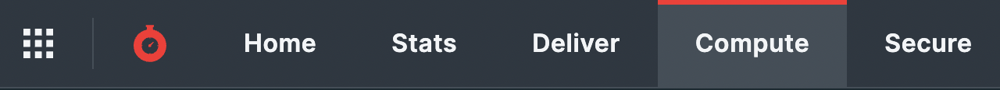
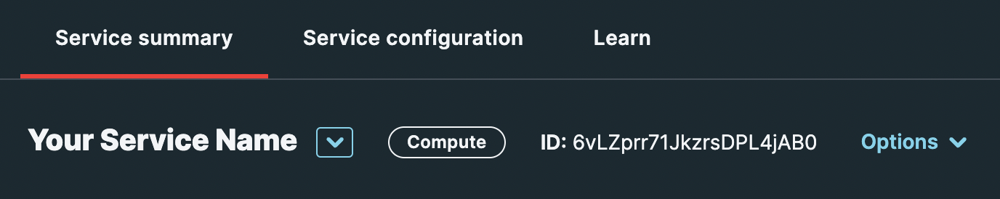

Creating a Service
A Compute@Edge service must be created for each serverless function you want to run. Each service can listen to one or more domains, but each domain can only map to a single service.
A Compute@Edge service can be created by the CLI, UI, API or API SDKs.
Note: after you have a service, be sure to add a domain so it can be accessed.
The CLI and SDKs both use the "Create a service" API. Note that this API requires the engineer role. The superuser role does not satisfy the requirements for this API.
Using the Console
In the console, click on the "Compute" menu item:

Click on the "Create a Compute service" button:
Note the Service ID beside your service name on the resulting page:

Using the CLI and API
Note: to use the CLI and API/SDKs, the token must be issued for a user with the
engineerrole. See the Troubleshooting section below for error messages you will encounter using thesuperuserrole.
For additional SDK examples, see the API Reference for the "Create a service" API.
Troubleshooting
Using the Superuser Permission
While a user with the superuser role can create a service in the Fastly Management Console, the same role cannot be used to create a service via the CLI or API and SDKs. The engineer role is required.
If you attempt to create a service with a superuser role you will receive the following errors:
Error Using the CLI
Attempting to create a service using the Fastly CLI with a superuser role will result in the following error:
Error Using the API
Attempting to create a service using the Fastly API with a superuser role will result in the following error:
Resolution
To resolve this issue, use an API Token for a user with the engineer access control role.
Workarounds
A workaround is to use the Fastly Management Console to create services.